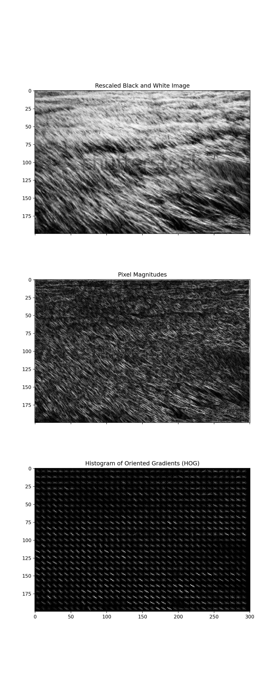
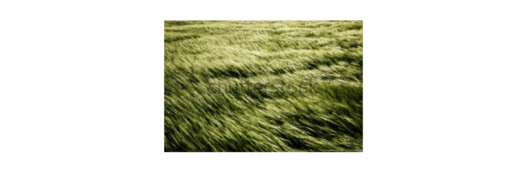

── Attaching core tidyverse packages ──────────────────────── tidyverse 2.0.0 ──
✔ dplyr 1.1.2 ✔ readr 2.1.4
✔ forcats 1.0.0 ✔ stringr 1.5.0
✔ ggplot2 3.5.0 ✔ tibble 3.2.1
✔ lubridate 1.9.2 ✔ tidyr 1.3.0
✔ purrr 1.0.2
── Conflicts ────────────────────────────────────────── tidyverse_conflicts() ──
✖ dplyr::filter() masks stats::filter()
✖ dplyr::lag() masks stats::lag()
ℹ Use the conflicted package (<http://conflicted.r-lib.org/>) to force all conflicts to become errors
Sys.which("python")
python
""
Load Python Libraries
import matplotlib.pyplot as pltimport pandas as pd# jupyter only inline output command#%matplotlib inlinefrom skimage.io import imread, imshowfrom skimage.transform import resizefrom skimage.feature import hogfrom skimage import data, exposureimport matplotlib.pyplot as pltfrom skimage import iofrom skimage import colorfrom skimage.transform import resizeimport mathfrom skimage.feature import hogimport numpy as np
Read, Grayscale, Resize Image
# TODO: DONT CHANGE HEIGHT AND WIDTHimg = color.rgb2gray(io.imread("images/grass_image2.jpg"))# img = color.rgb2gray(io.imread("images/b_test_image_copy.jpg"))#img = color.rgb2gray(io.imread("images/long_grass_sample.jpeg"))#img = color.rgb2gray(io.imread("images/diagnol_lines.jpg"))#img = color.rgb2gray(io.imread("images/san_francisco_scale_zoom_12.png"))#img = color.rgb2gray(io.imread("images/diagnol_lines_flipped.jpg"))#img = color.rgb2gray(io.imread("images/long_grass_sample_cropped.jpg"))# aerial rotated image#img = color.rgb2gray(io.imread("images/living_lab_aerial/aerial_grass_living_lab_rotated.jpg"))# zoomed internet photo#img = color.rgb2gray(io.imread("images/dead_grass_zoom.jpeg"))# zoomed in 11#img = color.rgb2gray(io.imread("images/living_lab_aerial/LL_zoomed_in_11.jpg"))# zoomed in 12#img = color.rgb2gray(io.imread("images/living_lab_aerial/LL_zoomed_in_12.jpg"))# zoomed in 16#img = color.rgb2gray(io.imread("images/living_lab_aerial/LL_zoomed_in_16_side.jpg"))# real one#img = color.rgb2gray(io.imread("images/living_labs_real_grass_image.jpg"))img.shape
(395, 596)
# height = img.shape[0]//5# width = img.shape[1]//5# original image aspect ratioaspect_ratio = img.shape[0]/img.shape[1]height =200width =int(height/aspect_ratio)width =300# height = 128# width = 192# make sure the resized is in sample ball park as the original aspect ratio, # that way the angles don't get squishedresized_ratio = height/widthimg = resize(img, (height, width))#img = resize(color.rgb2gray(io.imread("b_test_image_copy.jpg")), (height, width))#resized_img = resize(img, (height, width))plt.axis("off")
histogram_points_nine = []high_val =10# for i in range(0, height, high_val):# temp = []# for j in range(0, width, high_val):# magnitude_values = [[mag[i][x] for x in range(j, j+high_val)] for i in range(i,i+high_val)]# angle_values = [[theta[i][x] for x in range(j, j+high_val)] for i in range(i, i+high_val)]# for k in range(len(magnitude_values)):# for l in range(len(magnitude_values[0])):# bins = [0.0 for _ in range(number_of_bins)]# value_j = calculate_j(angle_values[k][l])# Vj = calculate_value_j(magnitude_values[k][l], angle_values[k][l], value_j)# Vj_1 = magnitude_values[k][l] - Vj# bins[value_j]+=Vj# bins[value_j+1]+=Vj_1# bins = [round(x, 9) for x in bins]# temp.append(bins)# histogram_points_nine.append(temp)# # print(len(histogram_points_nine))# print(len(histogram_points_nine[0]))# print(len(histogram_points_nine[0][0]))
epsilon =1e-05# feature_vectors = []# for i in range(0, len(histogram_points_nine) - 1, 1):# temp = []# for j in range(0, len(histogram_points_nine[0]) - 1, 1):# values = [[histogram_points_nine[i][x] for x in range(j, j+2)] for i in range(i, i+2)]# final_vector = []# for k in values:# for l in k:# for m in l:# final_vector.append(m)# k = round(math.sqrt(sum([pow(x, 2) for x in final_vector])), 9)# final_vector = [round(x/(k + epsilon), 9) for x in final_vector]# temp.append(final_vector)# feature_vectors.append(temp)# # print(len(feature_vectors))# print(len(feature_vectors[0]))# print(len(feature_vectors[0][0]))
Generate HOG Image
img = imread("images/living_lab_aerial/aerial_grass_living_lab_rotated.jpg")img = color.rgb2gray(io.imread("images/grass_image2.jpg"))aspect_ratio = img.shape[0]/img.shape[1]height =200width =int(height/aspect_ratio)# height = 128# width = 192# make sure the resized is in sample ball park as the original aspect ratio, # that way the angles don't get squishedresized_ratio = height/widthresized_img = resize(img, (height, width))plt.axis("off")
from skimage import color, io, exposurefrom skimage.transform import resizeimport matplotlib.pyplot as pltfrom skimage.feature import hog# Load the image and preprocess itimg = color.rgb2gray(io.imread("images/grass_image2.jpg"))# img = color.rgb2gray(io.imread("diagnol_lines_flipped.jpg"))aspect_ratio = img.shape[0] / img.shape[1]height =200width =int(height / aspect_ratio)resized_img = resize(img, (height, width))plt.figure(figsize=(8, 20)) # Adjusted the figure size to accommodate the additional objectplt.imshow(resized_img, cmap="gray")plt.axis("off")
(-0.5, 300.5, 199.5, -0.5)
plt.show()
# Compute HOG featureshog_features, hog_image = hog(resized_img, orientations=9, pixels_per_cell=(8,8), cells_per_block=(10, 10), visualize=True)# Plot the imagesfig, (ax1, ax2, ax3) = plt.subplots(3, 1, figsize=(8, 20), sharex=True, sharey=True) # Changed 1, 2 to 3, 1# Plot the rescaled black and white imageax1.imshow(resized_img, cmap=plt.cm.gray)ax1.set_title('Rescaled Black and White Image')# Plot the mag objectax2.imshow(mag, cmap=plt.cm.gray) # Assuming mag is the object you want to insert#ax2.axis("off")ax2.set_title('Pixel Magnitudes')# rescale HOG for better viewing:hog_color_rescaled = exposure.rescale_intensity(hog_image, in_range=(0, 10))# Plot the histogram of oriented gradientsax3.imshow(hog_color_rescaled, cmap=plt.cm.gray)ax3.set_title('Histogram of Oriented Gradients (HOG)')plt.savefig("images/plots/rescaled_grass2_image_hog.png", dpi=300)plt.show()

from skimage import color, io, exposurefrom skimage.transform import resizeimport matplotlib.pyplot as pltfrom skimage.feature import hog# Load the image and preprocess itimg = io.imread("images/grass_image2.jpg")# img = color.rgb2gray(io.imread("diagnol_lines_flipped.jpg"))aspect_ratio = img.shape[0] / img.shape[1]height =200width =int(height / aspect_ratio)resized_img = resize(img, (height, width))bw_resized_image = color.rgb2gray(resized_img)plt.figure(figsize=(15, 5)) # Adjusted the figure size to accommodate the additional objectplt.imshow(resized_img, cmap="gray")plt.axis("off")
(-0.5, 300.5, 199.5, -0.5)
plt.show()

# Compute HOG featureshog_features, hog_image = hog(bw_resized_image, orientations=9, pixels_per_cell=(8,8), cells_per_block=(10, 10), visualize=True)# Plot the imagesfig, (ax1, ax2, ax3) = plt.subplots(1, 3, figsize=(25, 5), sharex=True, sharey=True) # Changed 3, 1 to 1, 5# Plot the rescaled input imageax1.imshow(resized_img, cmap=plt.cm.gray)ax1.set_title('Rescaled Input Image')# Plot the pixel magnitudesax2.imshow(mag, cmap=plt.cm.gray) # Assuming mag is the object you want to insertax2.set_title('Pixel Magnitudes')# Plot the histogram of oriented gradientshog_color_rescaled = exposure.rescale_intensity(hog_image, in_range=(0, 10))ax3.imshow(hog_color_rescaled, cmap=plt.cm.gray)ax3.set_title('Histogram of Oriented Gradients (HOG) Image')# Plot the histogram of oriented gradients# angle_hist = io.imread("images/grass2_angles_histogram.jpg")# resized_hist = resize(angle_hist, (height, width))# ax4.imshow(resized_hist, cmap=plt.cm.gray)# ax4.set_title('Angle Histogram')# # # Plot the polar plot# polar_plot = io.imread("images/grass2_polar_plot.jpg")# resized_polar = resize(polar_plot, (height, width))# ax5.imshow(resized_polar, cmap=plt.cm.gray)# ax5.set_title('Polar Plot')plt.savefig("images/plots/rescaled_grass2_image_hog.png", dpi=300)plt.show()